其实并不复杂 看看发动机舱里都有啥
在我们的印象里，车坏了第一件事儿就是打开发动机盖，这可能是一种习惯，但回头想想这也是有一定道理的，毕竟发动机舱内的东西实在是太多了，除了主角发动机之外，还有很多汽车的关键部件。
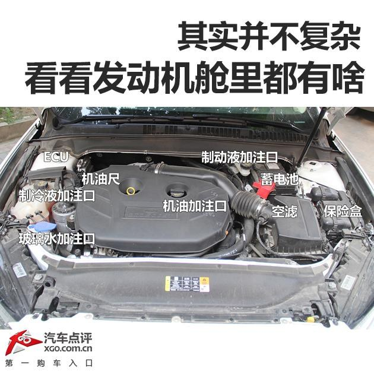首先，汽车各部位需要更换和添加的油油水水的都在机舱内部，比如机油、玻璃水、助力油等等。我们先来了解一下。
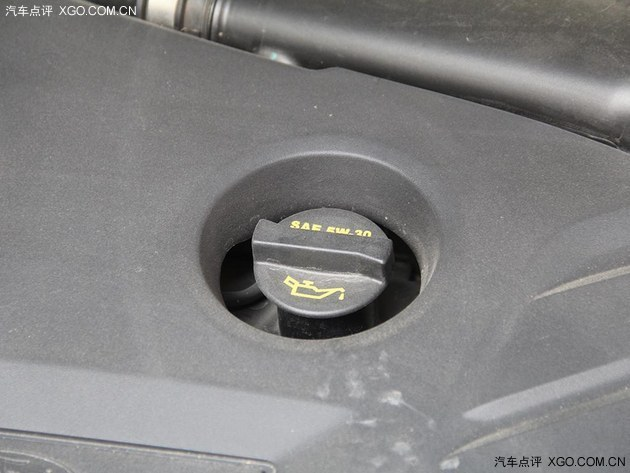▲机油加注口是比较关键的部位，虽然平时的使用率并不高，但是我们必须得知道它的位置。
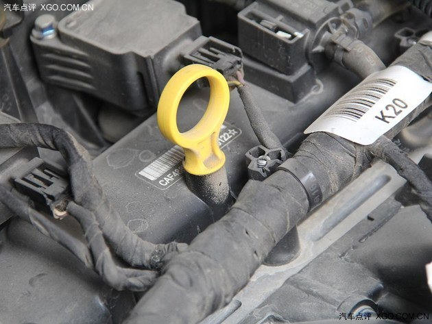▲机油尺是检测机油的唯一途径，目前大多数车都带有电子传感器，发动机内机油如果少了会报警，不过驾驶员还是希望通过机油尺来观察，还有在加机油的时候也是需要通过频繁查看机油尺来确定的。
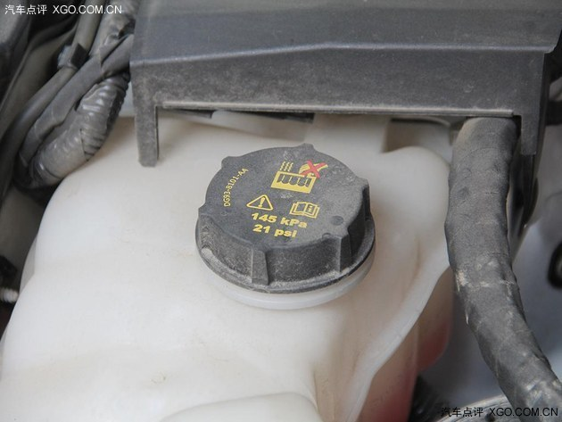▲冷却液加注口也不常用，通过观察液面高度或者直接在车内行车电脑显示液面信息，如果过低就需要及时补充。
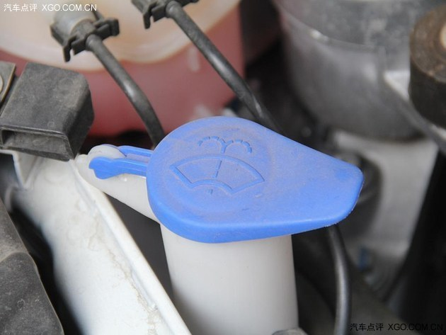▲玻璃水加注口就不用多说了，这一定是普通消费者接触的最多的发动机舱部件，别的油水都不用经常添补，这就不一样了，消耗较大，并且用完了就得及时补充，一般消费者自己就完成了。
听说之前有一个故事，一位驾驶员对发动机舱完全不了解，当然就是对汽车完全没概念，玻璃水用完了之后就把车开到4S店了，4S店也很诧异，居然还有人对玻璃水怎么加没概念，现在问问身边的任何自己，会加玻璃水么？
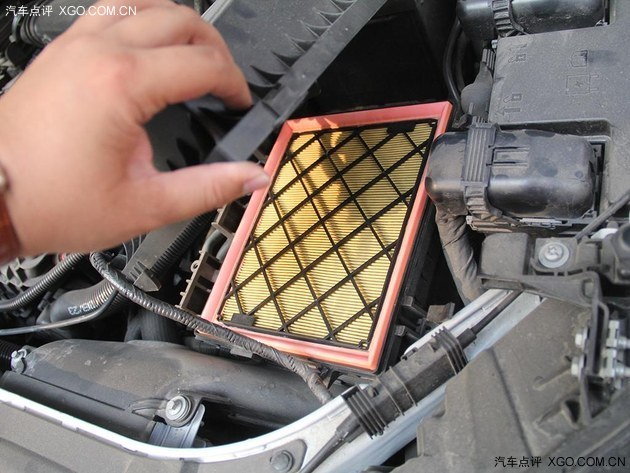▲空滤一般都在比较靠前的位置，是空气进入发动机的第一道程序，一般车辆的空滤很好更换，徒手就能打开，而机滤就不一样了，有些车在发动机上部，而有些就得把汽车升起来才能换机滤。
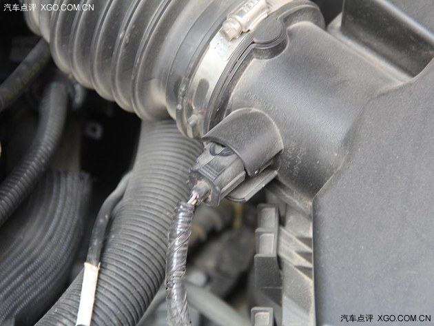▲空气流量计在空滤之后，一般就是对进气进行监测，同时汇报给ECU，ECU根据空气流量进行计算。
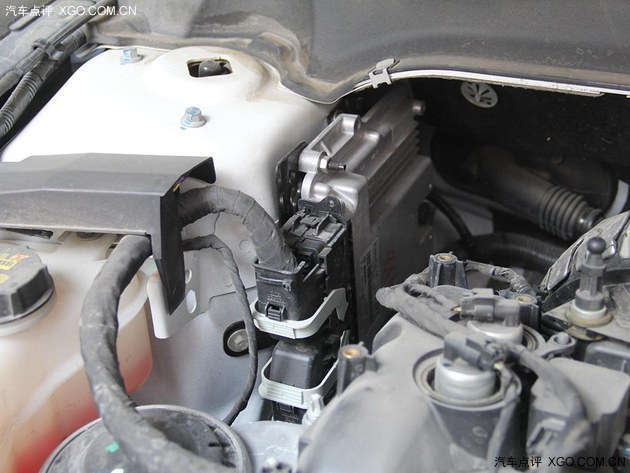▲这台车的ECU被安排在了发动机舱内靠近A柱下方的地方，点评君个人认为还是比较合理的，至少撞击时不会轻易的就被损坏，很多车都将ECU安排在了翼子板附近，随便一个剐蹭行车电脑就挂了，这成本就大了。
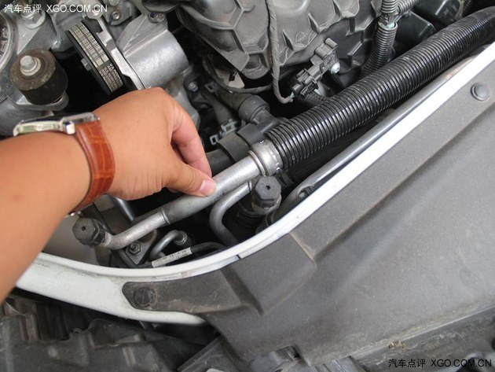▲机舱内比较粗的金属管是制冷剂循环管，也就是为空调服务的，很好分辨，用手摸的时候能感觉到很凉。
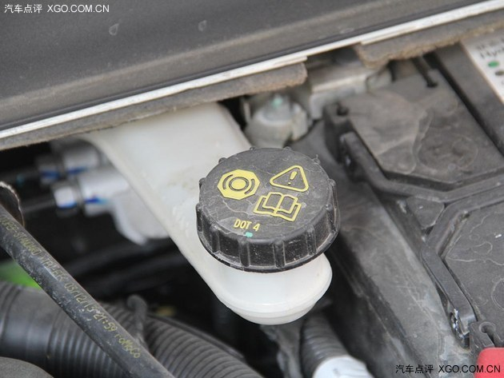▲制动液加注口（刹车油）一般也在靠近A柱下方的位置，原因是离刹车踏板比较近，不过刹车油一般驾驶员都没有能力自行更换，因为换起来非常麻烦，并且这确实是个比较关键的部位，换不好就麻烦了。
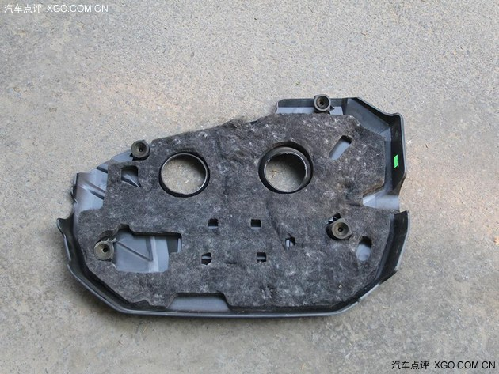▲发动机舱内大抵都有隔音罩进行隔热隔音处理，与此同时发动机盖上还有一层隔音棉，效果会跟好。
当然，图中标注的只是一眼能看到的部件，还有ABS泵，ESP控制模块等等也大体都在发动机舱内，只是日常中并不能常用到。
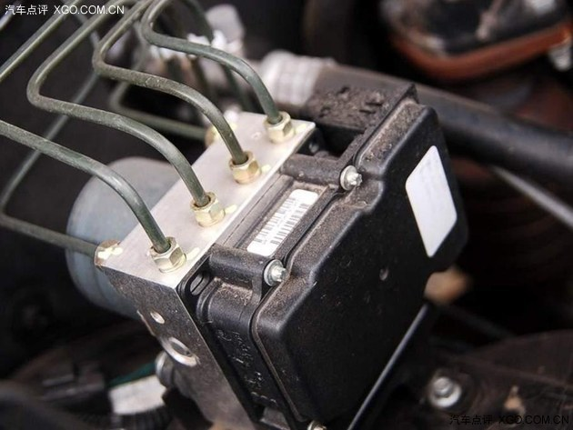▲ABS泵，一般隐藏在发动机舱内，平时没机会碰到，科普一下就行了。